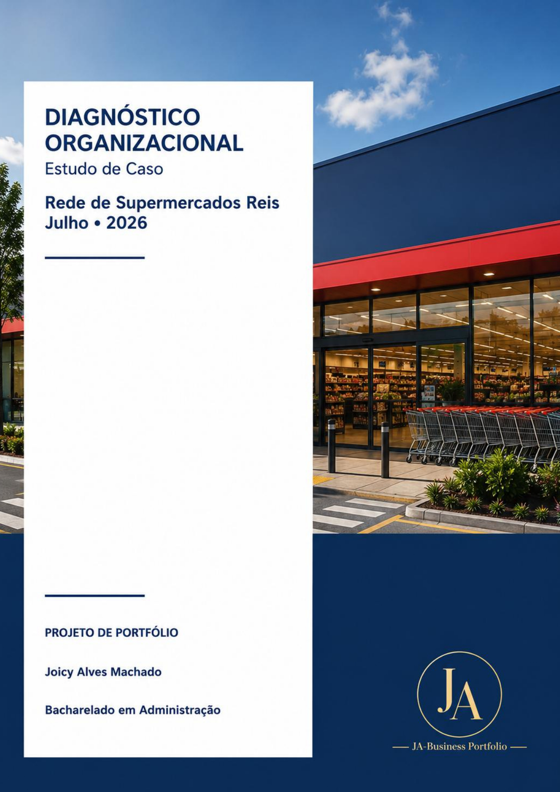
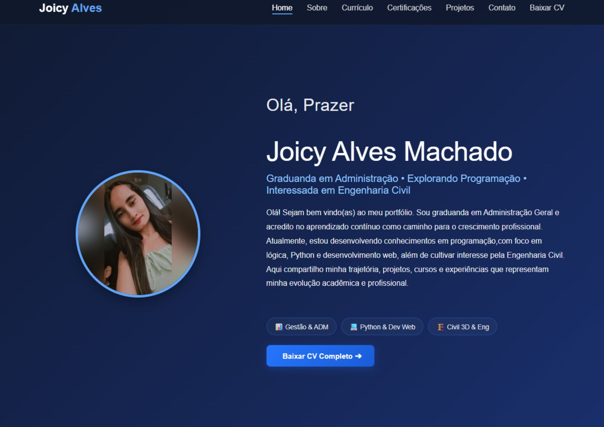
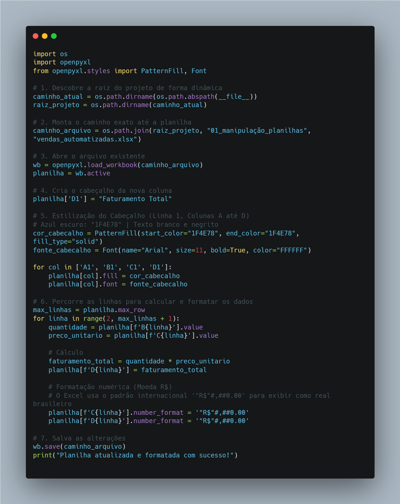

Meus Projetos
Esta página reúne os projetos desenvolvidos ao longo da minha jornada de evolução acadêmica e profissional, integrando conhecimentos estratégicos em Administração, soluções práticas em Tecnologia & Dados e estudos focados em Engenharia Civil.
💼 Cada projeto reflete minha visão multifacetada: estruturando processos eficientes na gestão, desenvolvendo lógica e automação na programação, e aplicando modelagem digital à infraestrutura.
Concluído

Concluído
Concluído
Em Andamento
Julho / 2026
Automações e Scripts em Python 3
Desenvolvimento de scripts inteligentes e algoritmos estruturados focados em manipulação de planilhas de dados e automação de tarefas cotidianas.
Python 3
Automação
Lógica